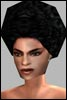

Anarchy Online Bulletin Board > Game-Play > Notum Wars > What I would like to get for Christmas from the Devs:
Anarchy Online Bulletin Board > Game-Play > Notum Wars > What I would like to get for Christmas from the Devs:| Pages (2): [1] 2 » |  Last Thread Next Thread Last Thread Next Thread  |
| Author | Thread |
| Jynne Supa Leet  | What I would like to get for Christmas from the Devs: Wished-for Patch Notes for Whenever...  - The hour-long 5% gas period has been done away with, pending the creation of an alliance system for organizations. Allies will be able to grid to each others' controllers and will be considered as the same guild for base defense by the towers and the CC system. - The 25% gas periods around LC areas have been scaled against controller QL. The new periods are: -- 3 hours for QL 100 and under. -- 4 hours for QL 101-200. -- 5 hours for QL 201+. - Attacking, healing, and buffing inside LC areas will be limited depending on the QL of the LC area. If your level is less than the high end PvP range of the upper QL limit of the LC area, and also is greater than the low end of the PvP range for the lower QL limit of the LC area, you can attack, heal, and buff all other people in that same range without restriction. If you are outside of the PvP range for the area, as defined, you cannot affect in any way the people who are 'in range,' or the towers. - The PvP "free for all" bracket in non-LC areas has been lowered from level 150 to level 125. - Damage caused by QL 150-200 turrets has been increased by 15%. - A "Cloaking Field" has been developed for defensive towers. This is an advanced camoflauge system that causes all guardians and turrets around your Controllers to vanish when the area's suppression gas is 100%. Putting a Cloaking Field Device into your "/org contract" box will activate it, and removing it will deactivate it. - An "Electromagnetic Analyzer" has been developed to attempt to penetrate tower Cloaking Fields. This expendable device gives the user a chance of spotting towers that are cloaked. This is a "hostile action" and checks the user's perception and the device's QL against a cloaked tower's Concealment. - Decoy Towers have been developed. These come in two types: -- Holo Decoys are small projectors that create the image of a tower, with a 1-hour battery life. "Use" the projector to create a tower's image directly in front of you. -- Shell Decoys are tower shells that lack weapons or nano generators. Simple electronics replicate moving parts and lights for realism. Shell Decoys are weakly armored and have no self-repair capability, and are designed to stand for 2 hours before auto-collapsing. NOTE: The same person can only have one Shell and one Holo decoy deployed at a time, and can only erect Decoys in a LC area that their organization owns. - Additional Service Tower types have been designed, as follows: -- Medical Service Towers pulse an aura that heals the owner and teammates in its area, and reduces the durations of hostile nano programs in friendly NCUs. This tower type has no weapons, however. -- Defensive Service Towers pulse a stronger shield, increasing AC more and adding a reflection shield. This tower type has no weapons. -- Notum Radiator Service Towers extract trace notum from the soil where they are planted to replenish nanobots more quickly for its owner. This tower type generates no shield, and has a light weapon. -- Heavy Combat Service Towers have stronger hitpoints and armor, and a large cannon. However, this tower type gives the user no beneficial shielding. -- Mine Towers deploy explosive mines against enemies in a small radius, causing explosive area damage. These towers have no beneficial shields for users. -- Ensnaring Towers radiate a "snare" aura, slowing down hostile creatures in its vicinity. This tower type has no shielding or weaponry. - Engineers can now create Repair Droids. These Repair Droids have had their weapons replaced with repair tools, but are well-armored and can perform repairs on towers or other robot pets. Engineers can still only command one robot at a time. - Those in an organization who are capable of placing a controller will be able to reset the controller's suppression gas period by targeting the controller and typing /tower reset. This will re-start the 18-hour 100% gas period for that controller as of the time the command is issued. However, it will also put your area immediately into a 25% suppression situation for the next hour, and can only be done once per controller. The intent is to allow organizations who capture land to shift their window of vulnerability onto a better schedule for them. Last edited by Jynne on December 31st, 2002 at 17:49 |
 December 11th, 2002 16:00 December 11th, 2002 16:00 | #1 |
| Hypos Supa Leet  | Lots of good ideas here. Nice work, Jynne. |
| December 11th, 2002 17:15 | #2 |
| Psiraven Supa Leet  | I want a complimentary Nerf bat shipped to me in the mail...and not one of those cheapo copies too, but one of the original ones from Mattel. |
| December 12th, 2002 04:05 | #3 |
| svendor Phear Leet  | I would like to see NT's get nerfed some more. |
| December 12th, 2002 14:04 | #4 |
| OverCaffeinated Soleet | Re: What I would like to get for Christmas from the Devs: quote:Lots of great ideas, but this is most important. It is also the easiest to implement, hint, hint. |
| December 12th, 2002 14:21 | #5 |
| Keaorata Phear Leet  | Fab ideas |
| December 12th, 2002 14:28 | #6 |
| jamster Leet  | damn real good ideas here you should be on the FC payrole for these ideas |
| December 12th, 2002 15:48 | #7 |
| Snuble I, Leet  | Here is what I would like to see. Base the area levels on what controllers yoiu can buy in shops. eg: the area intended for a lvl 100 tower should be 90 - 110. The area for a lvl 150 should be 130 - 175. Now. take the low level for the zone and apply the current PvP rule. Then take the high level of the zone and apply the current PvP rule for the zone. The level range that can fight/buff/heal inside that zone is now 72 - 138 and 104 - 200. If your inside those ranges, your free for everyone else inside that range. If your outside that range, you can't fight, you can't heal, you can't buff and you can't disable any shields. You would be the first to be teleported when the Crowd Controll kicks in, and you won't even be alowed to enter the area when the shields are down. It will create other issues. But I think it will be fair, and it will be a clean system. |
| December 12th, 2002 17:29 | #8 |
| Cemetarygate Supa Leet  | Re: What I would like to get for Christmas from the Devs: quote:I like the idea of reducing times for lower towers, but I would go a bit further. Maybe 1, 2 and 3? Seriously. Hanging around for 5+ hours in 25/5% supression when nothing happens is boring. quote:Or mines in general. Devices we can plant throughout the area causing damage to any hostile target. Good post, Jynne. |
| December 12th, 2002 20:55 | #9 |
| Portulis Retired  | Wow, lots of good ideas there Jynne All those new controller types would be cool, and the camoflage ideas would make good use of ADV perception buffs.... And a bump for FFA PVP set to 125 |
| December 12th, 2002 21:26 | #10 |
| drakoslady Eleet | My wish list just got shorter. I wish you had a job with FC then most of my concerns would be solved. VERY good ideas and well thought out. |
| December 12th, 2002 22:04 | #11 |
| Drsepsis Soleet | Alliance system I think this part is the MOST important thing that Jynne brought up. some system to assist in the formation and running of alliances would be GREAT. Help the smaller more closely knit guilds survive and have a chance of defending a tower....and also not getting sucked up by mergers with large guilds just cause the players wanna take part. Drsepsis |
| December 12th, 2002 22:42 | #12 |
| Jaesic Supa Leet  | Good ideas there, particularly the ones for service towers. When you're at 4.5k AC anyway, another couple hundred is not really worth the hassle of tracking down someone to build them above level 75 for you (or the expense). Something thats actually more of a fix issue with these service towers: the parts and completed towers need to be stackable. Since you have to make them (or have someone else make them, since the requirements are so high), as it is now you end up with a backpack full of single towers that aren't reusable and are highly inconvenient for setting up quick setup keys. Jaesic 171 NT (rk2) editted to add: Btw... I think the service towers are important because they are really the main feature for people who purchased NW but are either not in an org or are in an org that doesn't have the power to hold a base. If you don't have decent service towers, the only thing you get out of NW in those circumstances is a painted yalm. |
| December 13th, 2002 16:15 | #13 |
| Jynne Supa Leet | Oh, one more Christmas gift wish: - All players using weapons on Physical Inits are exempted from the crit reduction for PvP. |
| December 13th, 2002 19:38 | #14 |
| Psyonis Soleet  | I would like to see the ICC weather control system hacked and tuned to create snow on Rubi-Ka. LOL But seriously I would like to see random events happen like a giant mutant beast attacking Omni-1, or a high level Omni or Clan official has been kidnapped and the entire player base can work together to find him/her. Scavenger hunts for big loot and creds. So my christmas list is. Random events envolving the entire player base on Rubi-Ka (NOT IN THE SAME AREA). |
| December 13th, 2002 21:57 | #15 |
| Kealias Soleet  | Great ideas, especially the one about the repair droid for the engis, that would be really nice (have a lvl 57 engi). If not repair droids maybe a "first aid" kit for your bots. Locks up mechanical engineering for as long as a regular first aid kit locks up first aid. Of course they probably wouldn't sell it with the rest of the medical supplies so it would most likely have to be a tradeskill item to make. or maybe an engi store  Actually I would like to see an engi store that catered to the bots. Of course if they were to add something like that how many 'crats would start complining... hmm... |
| December 16th, 2002 06:18 | #16 |
| Jynne Supa Leet | Well, since none of my wishes here have come true, I've edited the main post with a few changes and new ideas, and I'm bumping this to the top. Hey, I can wish, right? |
| December 31st, 2002 17:50 | #17 |
| Waggery Devil's Advocate  | Great -bumpin- ideas! |
| December 31st, 2002 23:09 | #18 |
| Daetona Soleet  | - Originally posted by Jynne, " - All players using weapons on Physical Inits are exempted from the crit reduction for PvP. " ____________________________ I could kiss you for coming up with that!! And I could kick myself for not thinking of it with all the ranting I've done about how MA's are so totally borked in PVP now... Funcom, LOOK AT THIS PLEASE !!! *hopes and prays* One more thing for the Tower Wishlist... Isn't notum worth a considerable amount? What about actual mining capabilaties for the Control Towers !? This being money making for your Org... Basic example... A Ql 200 Tower will dig up and refine 100,000 Cred worth of Notum a week, a day, or whatever. Something reasonable, but still a help. The money goes directely into the Org Balance as if it where a tax. Now Orgs can have money to work with without having to depend on their members to make donations. This is just common sense to me... I know Towers give bonuses, and perhaps that's what the Notum that is mined is used for? I dunno... but I like this idea, hope others do as well... - Daetona Division 9 RSGE P.S. Jynne is short for Jynne-ious ( Genious ) !! Now come over to Omni, you know you wanna. =p |
| January 5th, 2003 11:59 | #19 |
| Smala Sussie Leet  | :applause: lots of good ideas  this post should stay at the top ^_^ |
| January 5th, 2003 14:04 | #20 |
| Pages (2): [1] 2 » | The saved copy (Funcom's forum archive, saved by the Wayback Machine in 2025) |
All times are GMT.